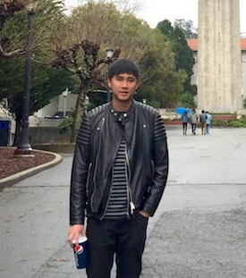

Kuo-Hao Zeng 曾國豪
UW Computer Science & Engineering Ph.D. student
khzeng at cs.washington.edu
News:
- I will join UW CSE as a Ph.D. student in September 2018.
Bio. I reveiced my MS. from National Tsing Hua University, where I worked with Prof. Min Sun on Machine Learning and Deep Learning. We focused their applications to Computer Vision, Natural Language Processing, Robot Learning, and their intersection. During my MS. study, I had the pleasure of being a visiting student working with Dr. Juan Carlos Niebles at Stanford Vision and Learning Lab.
My CV [PDF], last updated Aug. 2018.

UW
PhD. in CSE
Imcoming

Stanford
Visiting in CS
Sept. 16 - Mar. 17

NTHU
MS. in EE
Sept. 14 - Jul. 17

MediaTek
Summber Intern
Jul. 14 - Sept. 14

NSYSU
BS. in MEM
Sept. 10 - Jun. 14